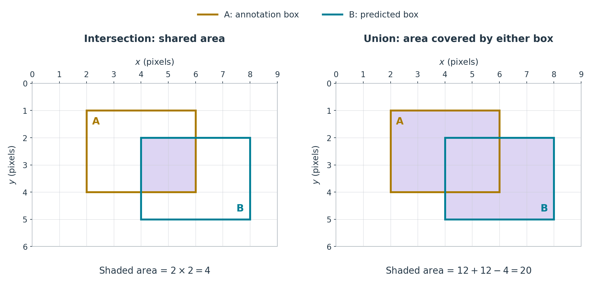

9 Evaluation of detection models
9.1 What are we evaluating?
We now want to compare our predicted boxes with the supplied annotation boxes. As discussed earlier, our application requires detections of the six active players, rather than every person in the image. A box around an observer may be a valid person detection, but it is not a detection we want for this task.
The annotations provide a reference for this comparison, though they may themselves contain errors. We want to know whether each player has been detected, whether there are unwanted or duplicate detections, and how closely the predicted box boundaries agree with the annotations.
Simply counting boxes is not enough. For example, six predicted boxes could still include an observer while missing one of the players. Even when a predicted box identifies the intended player, its boundaries may differ substantially from the annotation.
We therefore need a way to compare individual boxes before summarising agreement between the two sets. We will start by measuring how much two boxes overlap. For now, we evaluate detections within a single frame; linking player identities across frames is a separate tracking task.
9.2 Comparing two boxes
We can compare a predicted box with an annotation box by measuring their overlap. Consider the following simple example.

Each box is 4 pixels wide and 3 pixels high, so each has an area of \(4\times3=12\) square pixels.
The intersection is the region covered by both boxes. In this example, it is 2 pixels wide and 2 pixels high, giving an area of \(2\times2=4\) square pixels.
The union is the region covered by at least one box. Adding the two box areas counts the intersection twice, so we subtract it once:
\[ \text{area of union}=12+12-4=20. \]
Intersection over union, usually abbreviated IoU, is the ratio of these two areas:
\[ \operatorname{IoU} =\frac{\text{area of intersection}}{\text{area of union}} =\frac{4}{20} =0.20. \]
Thus, 20% of the area covered by either box is shared by both. For boxes with positive area, IoU ranges from 0 for no overlap to 1 for identical boxes. It depends on the box coordinates, not the detector’s confidence score.
9.2.1 Calculating box areas in Python
We will use the corner-coordinate format introduced for our predicted boxes:
[x_min, y_min, x_max, y_max]The first pair gives the upper-left corner, and the second gives the lower-right corner. We calculate width and height by subtracting the corresponding coordinates:
def box_area(box):
x_min, y_min, x_max, y_max = box
width = x_max - x_min
height = y_max - y_min
return width * heightThe first line inside the function unpacks the four coordinates into separate variables. The remaining lines calculate the dimensions and return their product.
For the two boxes in our diagram:
box_a = [2, 1, 6, 4]
box_b = [4, 2, 8, 5]
print(box_area(box_a))
print(box_area(box_b))This gives:
12
12These agree with the areas calculated earlier. The function also works with floating-point coordinates; box boundaries need not have integer coordinates. Here we assume correctly ordered corners: x_min <= x_max and y_min <= y_max.
9.2.2 Calculating the intersection
The intersection must lie inside both boxes. Its left edge therefore uses the larger of the two left-edge coordinates, while its right edge uses the smaller of the two right-edge coordinates.
For our example, these are \(\max(2,4)=4\) and \(\min(6,8)=6\), giving a width of 2 pixels. Applying the same rule to the top and bottom coordinates gives a height of 2 pixels.
If the boxes do not overlap, the calculated width or height may be negative. The intersection area should then be zero, so we replace any negative width or height with zero:
def intersection_area(box_a, box_b):
intersection_x_min = max(box_a[0], box_b[0])
intersection_y_min = max(box_a[1], box_b[1])
intersection_x_max = min(box_a[2], box_b[2])
intersection_y_max = min(box_a[3], box_b[3])
intersection_width = max(0, intersection_x_max - intersection_x_min)
intersection_height = max(0, intersection_y_max - intersection_y_min)
return intersection_width * intersection_heightThe indices 0, 1, 2 and 3 correspond to x_min, y_min, x_max and y_max, respectively. The max(0, ...) calls ensure that separated boxes have zero intersection area.
For the same two boxes:
print(intersection_area(box_a, box_b))This gives:
49.2.3 Calculating the union and IoU
We can now calculate the union area by adding the two box areas and subtracting their intersection once. We reuse the functions we have already written:
def union_area(box_a, box_b):
area_a = box_area(box_a)
area_b = box_area(box_b)
overlap = intersection_area(box_a, box_b)
return area_a + area_b - overlapTo obtain IoU, we divide the intersection area by the union area:
def box_iou(box_a, box_b):
overlap = intersection_area(box_a, box_b)
combined_area = union_area(box_a, box_b)
if combined_area == 0:
raise ValueError("IoU is undefined when both boxes have zero area")
return overlap / combined_areaThe check catches a zero-area union, for which the ratio is undefined. Otherwise, the function returns the intersection divided by the union.
For our two example boxes:
print(union_area(box_a, box_b))
print(box_iou(box_a, box_b))This gives:
20
0.2These reproduce the union area and IoU calculated from the diagram. We now have a function for comparing one predicted box with one annotation box.
9.3 Comparing sets of boxes
For a frame containing several boxes, we need a way to match predicted boxes to annotation boxes. A standard way to do this is to first calculate IoU for every annotation–prediction pair. This can then be used to determine a set of matches.
First, to extend our example, let us add a second annotation box and a second predicted box:
annotation_boxes = [
[2, 1, 6, 4],
[0, 0, 2, 2],
]
prediction_boxes = [
[4, 2, 8, 5],
[2, 1, 6, 4],
]Each row contains the four corner coordinates of one box. With two annotations and two predictions, there are four pairs to compare.
Applying box_iou to each pair gives the following IoU matrix, with annotation boxes as rows and predicted boxes as columns:
| Predicted box 1 | Predicted box 2 | |
|---|---|---|
| Annotation box 1 | 0.20 | 1.00 |
| Annotation box 2 | 0.00 | 0.00 |
For example, the top-right entry comes from box_iou(annotation_boxes[0], prediction_boxes[1]), which returns 1.0.
Here, both predicted boxes overlap annotation box 1. We can match this annotation to predicted box 2, which has the larger IoU. Predicted box 1 and annotation box 2 remain unmatched.
In general, a predicted box can overlap several annotation boxes. We then need to choose the matches together, so that each annotation box and each predicted box appears in at most one match.
9.3.1 Choosing matches together
Here, we first choose a one-to-one assignment that maximises total IoU, then reject pairs below a minimum IoU. This is one possible matching rule, rather than the standard approach used in detection benchmarks such as COCO.
We could instead:
- exclude low-IoU pairs before assignment;
- use confidence-ordered greedy matching, as COCO does.
Suppose we move the second annotation box and adjust the predicted boxes so that each prediction overlaps both annotations:
annotation_boxes = [
[2, 1, 6, 4],
[4, 1, 8, 4],
]
prediction_boxes = [
[2, 1, 7, 4],
[1, 1, 5, 4],
]The IoU matrix is now, rounded to two decimal places:
| Predicted box 1 | Predicted box 2 | |
|---|---|---|
| Annotation box 1 | 0.80 | 0.60 |
| Annotation box 2 | 0.50 | 0.14 |
Both annotations have their highest IoU with predicted box 1. To choose one-to-one matches, we can compare the total IoU for each possible way of pairing both annotations with different predictions:
- Annotation 1 with prediction 1, and annotation 2 with prediction 2: total IoU approximately 0.94.
- Annotation 1 with prediction 2, and annotation 2 with prediction 1: total IoU 1.10.
The second pairing gives the larger total. We therefore match annotation 1 to prediction 2, and annotation 2 to prediction 1.
This is a small assignment problem that can be expressed as a linear programming problem (as in ENGSCI 391). For larger tables, we can use an assignment algorithm to find the one-to-one matches with the largest total IoU.
9.3.2 Calculating the IoU matrix in Python
We can build the whole IoU matrix by calling box_iou for each annotation–prediction pair and storing the results in a NumPy array:
import numpy as np
def pairwise_iou(annotation_boxes, prediction_boxes):
ious = np.zeros(
(len(annotation_boxes), len(prediction_boxes)),
dtype=float,
)
for row, annotation_box in enumerate(annotation_boxes):
for column, prediction_box in enumerate(prediction_boxes):
ious[row, column] = box_iou(
annotation_box, prediction_box
)
return iousnp.zeros creates a floating-point array with one row per annotation and one column per prediction, initially filled with zeros. enumerate gives us both the position and the box at each step, with positions starting at zero.
Using our current example:
ious = pairwise_iou(annotation_boxes, prediction_boxes)
print(np.round(ious, 2))This gives:
[[0.8 0.6 ]
[0.5 0.14]]as in our table before. We use rounding for display only.
The same function works with different numbers of boxes of each type. For example, six annotations and eight predictions produce a matrix with shape (6, 8).
9.3.3 Selecting candidate matches in Python
Each annotation box is either unmatched or matched to exactly one predicted box. Each predicted box is either unmatched or matched to exactly one annotation box.
For our two-by-two example, let \(x_{ij}\) be the decision variable for pairing annotation box \(i\) with predicted box \(j\). We can formulate this assignment problem as a linear programme, as in ENGSCI 255/ENGSCI 391:
\[ \begin{aligned} \text{maximise}\quad &0.80x_{11}+0.60x_{12}+0.50x_{21}+0.14x_{22}\\ \text{subject to}\quad &x_{11}+x_{12}\leq 1 &&\text{(annotation 1)},\\ &x_{21}+x_{22}\leq 1 &&\text{(annotation 2)},\\ &x_{11}+x_{21}\leq 1 &&\text{(prediction 1)},\\ &x_{12}+x_{22}\leq 1 &&\text{(prediction 2)},\\ &x_{ij}\geq 0 &&\text{for }i,j\in\{1,2\}. \end{aligned} \]
This LP has an optimal solution in which each \(x_{ij}\) is 0 or 1. A value of 1 selects that pair.
SciPy provides a specialised solver for this assignment problem, linear_sum_assignment. It minimises total cost, so we supply -ious to obtain the pairing with the largest total IoU:
from scipy.optimize import linear_sum_assignment
annotation_indices, prediction_indices = linear_sum_assignment(-ious)
print(annotation_indices)
print(prediction_indices)For our current example, this gives:
[0 1]
[1 0]This indicates a selected solution, with Python’s zero-based indexing, of linking annotation box 1 with predicted box 2, and annotation box 2 with predicted box 1, as before.
SciPy handles rectangular assignments directly, pairing each box in the smaller set with a distinct box in the larger set. With six annotations and eight predictions, this gives six candidate pairs and leaves two predictions unpaired.
We generally require a minimum IoU to count a candidate pair as a match. The selected pair of annotation box 2 and predicted box 1 has an IoU of 0.50. If we require an IoU of at least 0.60, we reject this pair, leaving these two boxes unmatched.
9.3.4 Applying the minimum IoU in Python
We now check each selected annotation–prediction pair against the minimum IoU. We use zip to loop over selected pairs of elements from the two arrays:
minimum_iou = 0.60
matches = []
for annotation_index, prediction_index in zip(
annotation_indices, prediction_indices
):
iou = float(ious[annotation_index, prediction_index])
if iou >= minimum_iou:
matches.append(
{
"annotation_index": int(annotation_index),
"prediction_index": int(prediction_index),
"iou": iou,
}
)
print(matches)For our current example, this gives:
[{'annotation_index': 0, 'prediction_index': 1, 'iou': 0.6}]The list matches contains one dictionary per accepted pair. This result records annotation box 1 matched to predicted box 2. Annotation box 2 and predicted box 1 remain unmatched.
Here, we do not reconsider the assignment after rejecting a pair. Maximising total IoU first does not necessarily give the largest possible number of matches above the threshold.
9.3.5 Counting true positives, false positives and false negatives
We use the supplied player annotations as our ‘ground truth’ reference for the six-player task. For this evaluation, we count an annotated player as detected when our one-to-one assignment selects a pair between that player’s annotation box and a person prediction, and the pair’s IoU is at least the chosen minimum.
Using these criteria, we define:
- True positives (TP): the number of accepted pairings of a
personprediction box with a player annotation box. - False positives (FP): the number of
personprediction boxes with no accepted match to a player annotation box. - False negatives (FN): the number of player annotation boxes with no accepted match to a
personprediction box.
False positives are false alarms for our player-detection task, while false negatives are misses. This is analogous to the distinction between Type I and Type II errors in hypothesis testing. Here, the errors are defined by the player annotations and our matching criterion. As in hypothesis testing, there is often a trade-off or tension between reducing these errors, i.e., reducing one tends to increase the other.
Each accepted match accounts for one predicted box and one annotation box, so we can calculate the counts as follows:
true_positives = len(matches)
false_positives = len(prediction_boxes) - true_positives
false_negatives = len(annotation_boxes) - true_positives
print("TP:", true_positives)
print("FP:", false_positives)
print("FN:", false_negatives)For our two-by-two example, this gives:
TP: 1
FP: 1
FN: 1The rejected pair contributes one FP (predicted box 1) and one FN (annotation box 2). These counts describe agreement under our chosen matching rule and IoU threshold.
9.3.6 Precision and recall
Precision is the proportion of person predictions that have an accepted match to a player annotation:
\[ \text{precision} = \frac{\mathrm{TP}}{\mathrm{TP} + \mathrm{FP}}. \]
Recall is the proportion of player annotations that have an accepted match to a person prediction:
\[ \text{recall} = \frac{\mathrm{TP}}{\mathrm{TP} + \mathrm{FN}}. \]
Here, \(\mathrm{TP} + \mathrm{FP}\) is the total number of predictions, while \(\mathrm{TP} + \mathrm{FN}\) is the total number of player annotations.
Precision is undefined when there are no predictions, and recall is undefined when there are no annotations. We use 0.0 as a coding convention for these cases. The inline if ... else expressions use the ratio when its denominator is positive, and return 0.0 otherwise:
predicted_count = true_positives + false_positives
annotation_count = true_positives + false_negatives
precision = true_positives / predicted_count if predicted_count > 0 else 0.0
recall = true_positives / annotation_count if annotation_count > 0 else 0.0
print("Precision:", precision)
print("Recall:", recall)For our two-by-two example, this gives:
Precision: 0.5
Recall: 0.5Precision is 0.5 because one of the two person predictions has an accepted match. Recall is 0.5 because one of the two annotated players is counted as detected.
As with false positives and false negatives, precision and recall often trade off when we vary the detector’s confidence threshold. For example, keeping only higher-scoring predictions may reduce false positives and increase precision, but can also discard predictions that would have matched player annotations, increasing false negatives and therefore lowering recall. This effect is not guaranteed and depends on context and how predictions correspond to targets. Here, for example, a high-scoring person prediction may still correspond to an observer rather than an active player.
9.3.7 Comparing matching rules
We can compare matching rules using the same two annotations and two predictions. Suppose prediction 1 has confidence 0.95 and prediction 2 has confidence 0.85. Keep both predictions; their confidence scores determine the order for greedy matching. We will compare the rules at minimum IoUs of 0.50 and 0.70.
The IoUs are:
| Prediction 1 | Prediction 2 | |
|---|---|---|
| Annotation 1 | 0.80 | 0.60 |
| Annotation 2 | 0.50 | 0.14 |
Assignment followed by rejection
The maximum-total-IoU assignment pairs annotation 1 with prediction 2 (IoU 0.60), and annotation 2 with prediction 1 (IoU 0.50). Their total IoU is 1.10, compared with approximately 0.94 for the other pairing.
- With a minimum IoU of 0.50, both pairs are accepted: TP = 2, FP = 0, FN = 0.
- With a minimum IoU of 0.70, both pairs are rejected: TP = 0, FP = 2, FN = 2.
In the second case, annotation 1 and prediction 1 have IoU 0.80, but this pair was not selected by the original assignment. Applying the IoU threshold afterwards leaves both boxes unmatched, without reconsidering this pair. In this example, it would be sensible to reconsider the unmatched boxes or apply the threshold before assignment: either would recover this valid match and avoid one false positive and one false negative.
Threshold before assignment
Pairs below the minimum IoU are not allowed as matches. We then maximise total IoU over the remaining one-to-one matches, allowing boxes to remain unmatched.
- At 0.50, the eligible IoUs are 0.80, 0.60 and 0.50. Choosing the 0.60 and 0.50 pairs gives the largest total: TP = 2, FP = 0, FN = 0.
- At 0.70, only annotation 1 paired with prediction 1 is eligible, with IoU 0.80: TP = 1, FP = 1, FN = 1.
Here, the threshold determines which pairs can enter the assignment, rather than only which assigned pairs are retained.
Confidence-ordered greedy matching
Predictions are considered from highest to lowest confidence. Each prediction is matched to the remaining annotation with the highest IoU, provided that IoU meets the threshold. Once matched, that annotation is unavailable to later predictions.
At a minimum IoU of 0.50, prediction 1 goes first because its confidence is 0.95, compared with 0.85 for prediction 2. It takes annotation 1, with IoU 0.80. Prediction 2 then has no eligible annotation left: its IoU with annotation 2 is only 0.14. This gives TP = 1, FP = 1, FN = 1.
Greedy matching can therefore miss an opportunity to accept two reasonable matches because it commits to one stronger match first. In this example, that produces an additional false negative and false positive. The greedy rule prioritises higher-confidence predictions rather than choosing the matches jointly.
At a minimum IoU of 0.70, the 0.80 pair is still accepted and prediction 2 still has no eligible annotation. The counts are again TP = 1, FP = 1, FN = 1.
| Minimum IoU | Rule | TP | FP | FN | Precision | Recall |
|---|---|---|---|---|---|---|
| 0.50 | Assignment, then rejection | 2 | 0 | 0 | 1.00 | 1.00 |
| 0.50 | Threshold before assignment | 2 | 0 | 0 | 1.00 | 1.00 |
| 0.50 | Confidence-ordered greedy | 1 | 1 | 1 | 0.50 | 0.50 |
| 0.70 | Assignment, then rejection | 0 | 2 | 2 | 0.00 | 0.00 |
| 0.70 | Threshold before assignment | 1 | 1 | 1 | 0.50 | 0.50 |
| 0.70 | Confidence-ordered greedy | 1 | 1 | 1 | 0.50 | 0.50 |
9.3.8 Filtering predictions before evaluation
In the comparison above, we kept the prediction boxes fixed. We can also filter predictions before matching them to the annotations. Besides using a confidence cutoff, we can use the estimated court positions to reject detections outside the court.
To see what a filter changes, we keep the annotations, matching rule and minimum IoU fixed. We then recompute the matches using the retained predictions and compare the resulting counts, precision and recall.
Let’s return to the eight saved person detections in frame 50, selected with confidence at least 0.50. We use assignment followed by rejection, with a minimum IoU of 0.50, and compare against the same six player annotations.
The court filter introduced in Checking the court positions retains detections D2–D7 and removes D1 and D8. Recomputing the matches gives:
| Predictions | TP | FP | FN | Precision | Recall | |
|---|---|---|---|---|---|---|
| Before court filter | 8 | 6 | 2 | 0 | 0.75 | 1.00 |
| After court filter | 6 | 6 | 0 | 0 | 1.00 | 1.00 |
In this frame, the filter removes two false positives without losing any accepted player matches.
Precision and recall of 1 do not mean that the predicted boxes line up exactly with the annotations. For example, one accepted pair still has IoU about 0.58.
The filter can also make errors. A poor estimate of floor contact or an inaccurate camera mapping can put a player outside the court region, causing a false negative. Conversely, being inside the region does not guarantee that a person is an active player.
9.4 Choosing and interpreting evaluation measures
9.4.1 Confusion matrices and accuracy
For a simple two-class classification problem, we label the class of interest positive and the other class negative. Each example has a supplied class label and one predicted label. A confusion matrix counts the resulting outcomes:
| Supplied label | Predicted positive | Predicted negative |
|---|---|---|
| Positive | TP | FN |
| Negative | FP | TN |
A true negative (TN) is a negative example correctly classified as negative. For these labelled examples, classification accuracy is the fraction counted in the TP and TN cells:
\[ \text{accuracy} = \frac{\mathrm{TP} + \mathrm{TN}}{\mathrm{TP} + \mathrm{FP} + \mathrm{FN} + \mathrm{TN}}. \]
In object detection, the number and locations of predicted boxes are themselves part of the output. Matching gives us TP, FP and FN, but there is no natural count of all the background boxes that the detector correctly did not report, i.e. TN. Ordinary classification accuracy is therefore not an appropriate summary of our box-matching evaluation. Note though that precision and recall can be calculated without a TN count:
\[ \text{precision} = \frac{\mathrm{TP}}{\mathrm{TP} + \mathrm{FP}}, \qquad \text{recall} = \frac{\mathrm{TP}}{\mathrm{TP} + \mathrm{FN}}. \]
9.4.2 Which measure of performance is best?
There is no universally best measure of object detection performance: the choice depends on which errors matter for the application. For our player-detection task, we will read the TP, FP and FN counts and precision/recall together with the box IoUs and overlays to check for ‘localisation’ quality in addition to 0/1 detection. F1 combines precision and recall into one measure but can hide the balance between false positives and false negatives.
So far, we have chosen one confidence threshold. Keeping the images, annotations and matching criterion fixed, we can also vary the detector’s confidence threshold and calculate precision and recall at different settings. A precision–recall curve plots the resulting pairs, with recall on the horizontal axis and precision on the vertical axis. Each plotted point represents a confidence-threshold choice for which both measures are defined. For a given object class, average precision (AP) is based on the area under a precision–recall curve.
9.4.3 Training loss and evaluation data
Note that the training loss refers to the quantity minimised when fitting model parameters. Here we are using a pre-trained model fitted to other data, and evaluating it on our own data without updating its weights. A loss function can also be used to evaluate new predictions. In this example, we use IoU, accepted-match counts, precision and recall, rather than recomputing YOLO’s training loss.
We are still choosing settings for the whole pipeline, such as the confidence threshold and court-filter margin. These can be thought of as hyperparameters of the pipeline. Since we use this clip to make those choices, we should treat it as development (or validation) data, not an untouched test set.
To assess how the chosen pipeline performs on new recordings, we would need test recordings not used for those choices. Note that just randomly separating neighbouring frames from the same clip would provide a much weaker test, as those frames are very similar (i.e. correspond to highly correlated data points).